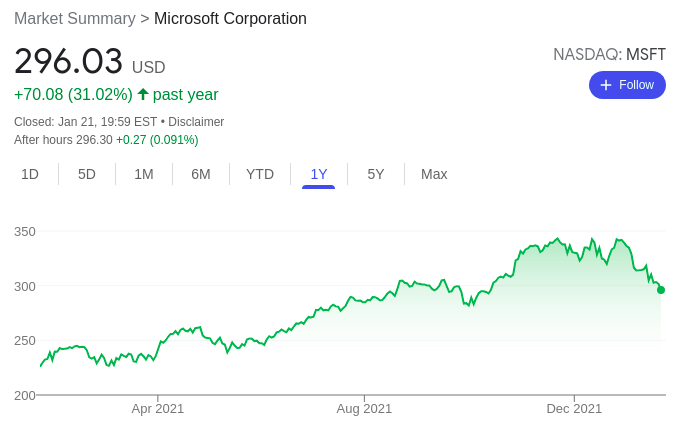
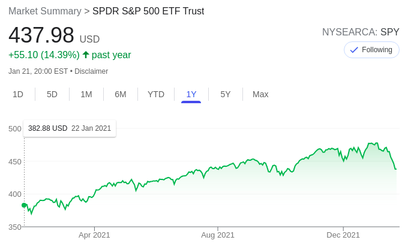
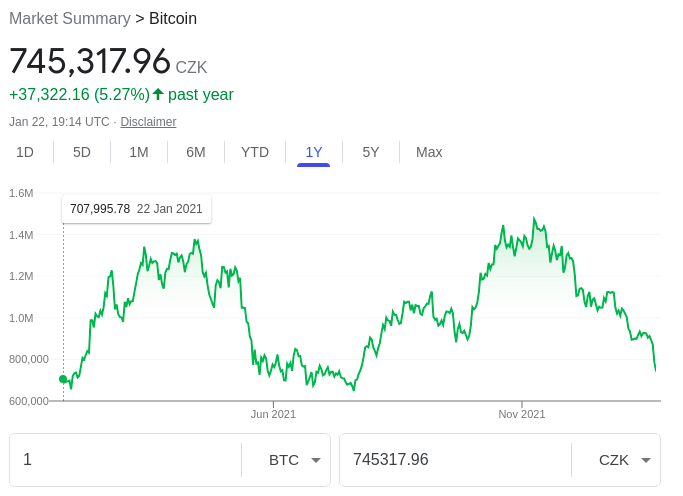
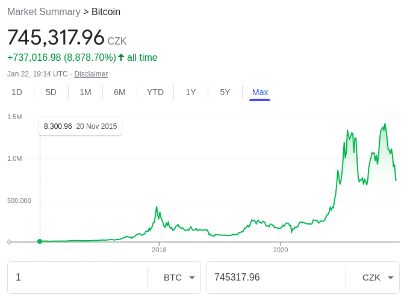

Konec roku 2021 ukázal začátek korekce na některých akcií. Původně šlo pouze o předražené tituly a lehkou redukci. Časem, ale některé akcie klesaly více než jen k drobné korekci a spadly na své IPO hodnoty (menší firmy, jako Telos, Beyond meet, Unity, ...).
Mimo "vyhipované" akcie, začaly klesat začátkem roku i velké stabilní technologické firmy (Facebook, Microsoft, ...) a další akcie přestaly růst, tak jako rostly v druhé polovině roku 2021. Stejně tak S7P500 přestal po dlouhé době kontinuálně růst a lehce redukoval svoji cenu (stále se však zdá být trh přepálený).
Začátek možné korekce na Microsoftu (roční graf):

Začátek možné korekce na S&P500 (roční graf):

Poměrně velkou redukcí si prochází začátkem roku 2022 i Bitcoin. Který z nějakých 1.3M Kč klesá (zatím) až na 0.761M Kč. Teď jde o to, kam až BTC může klesnout a zda je nyní dobra příležitost k nákupu ... Nedávno jsem při menší korekci přikoupil, tak není úplně nutné dále přikupovat. Pokud, ale cena klesne pod 700 tis. kč, tak možná ještě něco přikoupím.
Korekce na Bitcoinu (roční graf):

Korekce na Bitcoinu (max. graf):
